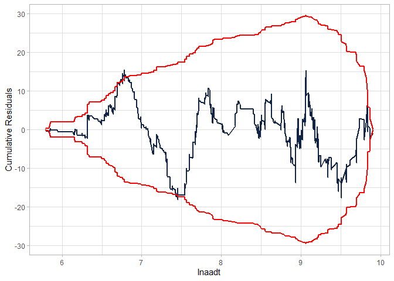
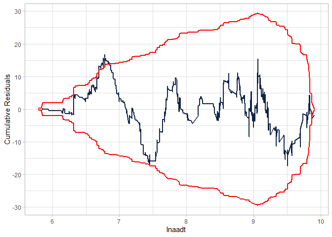

The goal of flexCountReg is to provide functions that allow the analyst to estimate count regression models that can handle multiple analysis issues including excess zeros, overdispersion as a function of variables (i.e., generalized count models), random parameters, etc.
Installation
You can install the development version of flexCountReg like using:
# install.packages("devtools")
devtools::install_github("jwood-iastate/flexCountReg")Functions and Data
The following functions are included in the flexCountReg package, grouped by continuous and count distributions.
Distribution Functions
Continuous Distributions
-
Inverse Gamma Distribution
-
dinvgammafor the density function -
pinvgammafor the cumulative density function -
qinvgammafor the quantile function -
rinvgammafor random number generation
-
-
Triangle Distribution
-
dtrifor the density function -
ptrifor the cumulative density function -
qtrifor the quantile function -
rtrifor random number generation
-
-
Lognormal Distribution
-
mgf_lognormalfor estimating the moment generating function
-
Count Distributions
-
Generalized Waring Distribution
-
dgwarfor the density function -
pgwarfor the cumulative density function -
qgwarfor the quantile function -
rgwarfor random number generation
-
-
Poisson-Generalized-Exponential Distribution
-
dpgefor the density function -
ppgefor the cumulative density function -
qpgefor the quantile function -
rpgefor random number generation
-
-
Poisson-Inverse-Gaussian Distribution (Types 1 and 2)
-
dpinvgausfor the density function -
ppinvgausfor the cumulative density function -
qpinvgausfor the quantile function -
rpinvgausfor random number generation
-
-
Poisson-Inverse-Gamma Distribution
-
dpinvgammafor the density function -
ppinvgammafor the cumulative density function -
qpinvgammafor the quantile function -
rpinvgammafor random number generation
-
-
Poisson-Lindley Distribution
-
dplindfor the density function -
pplindfor the cumulative density function -
qplindfor the quantile function -
rplindfor random number generation
-
-
Poisson-Lindley-Gamma (Negative Binomial-Lindley) Distribution
-
dplindGammafor the density function -
pplindGammafor the cumulative density function -
qplindGammafor the quantile function -
rplindGammafor random number generation
-
-
Poisson-Lindley-Lognormal Distribution
-
dplindLnormfor the density function -
pplindLnormfor the cumulative density function -
qplindLnormfor the quantile function -
rplindLnormfor random number generation
-
-
Poisson-Lognormal Distribution
-
dpLnormfor the density function -
ppLnormfor the cumulative density function -
qtpLnormfor the quantile function -
rpLnormfor random number generation
-
-
Poisson-Weibull Distribution
-
dpoisweibullfor the density function -
ppoisweibullfor the cumulative density function -
qpoisweibullfor the quantile function -
rpoisweibullfor random number generation
-
-
Sichel Distribution
-
dsichelfor the density function -
psichelfor the cumulative density function -
qsichelfor the quantile function -
rsichelfor random number generation
-
-
Conway-Maxwell-Poisson Distribution
-
dcomfor the density function -
pcomfor the cumulative density function -
qcomfor the quantile function -
rcomfor random number generation
-
Model Estimation Functions
-
countregis a general function for estimating the non-panel, non-random parameters count regression models -
countreg.rpestimates the random parameters count models. -
poislind.reestimates the random effects Poisson-Lindley model -
renbestimates the random effects negative binomial regression model.
Model Evaluation, Comparison, and Convenience Functions
-
cureplotgenerates a CURE plot for the specified model, based on the cureplots package. -
maecomputes the Mean Absolute Error (MAE). -
myAICcomputes the Akaike Information Criterion (AIC) value. -
myBICcomputes the Bayesian Information Criterion (BIC) value. -
regCompTablecreates a publication-ready table comparing multiple models. This can include the regression estimate results, AIC, BIC, and Pseudo R-Square values. -
regCompTestcompares any given model with a base model. This can be used to perform a likelihood ratio test between models. -
rmsecomputes the Root Mean Squared Error (RMSE). -
predictallows the predict function to be used for out-of-sample predictions for any of the flexCountReg models. -
summaryallows the use of the summary function to get a model summary from a flexCountReg regression object.
Data A dataset, washington_roads, is included. It is based on a sample of Washington primary 2-lane roads from the years 2016-2018. Data for the roads, traffic volumes (AADT) and associated crashes were obtained from the Highway Safety Information System (HSIS).
Probability Distributions
As noted in the list of functions, the probability distributions below are included in the flexCountReg package. Details of the distributions are provided in the documentation (help files).
Continuous Distributions
- Inverse Gamma Distribution
- Triangle Distribution
Count Distributions Distributions that Handle Equidispersion
- Poisson
Distributions that handle Underdispersion
- Conway-Maxwell-Poisson (COM) Distribution
Distributions that Handle Overdispersion
- Negative Binomial in various forms (NB-1, NB-2, and NB-P)
- Poisson-Inverse-Gaussian Distribution (Types 1 and 2)
- Poisson-Inverse-Gamma
- Poisson-Lognormal Distribution
- Poisson-Weibull Distribution
- Sichel Distribution
- Generalized Waring Distribution
Distributions that Handle Excess Zeros
- Poisson-Generalized-Exponential Distribution
- Poisson-Lindley Distribution
- Poisson-Lindley-Gamma (Negative Binomial-Lindley) Distribution
- Poisson-Lindley-Lognormal Distribution
Example
The following is an example of using flexCountReg to estimate a negative binomial (NB-2) regression model with the overdispersion parameter as a function of predictor variables:
library(gt) # used to format summary tables here
library(flexCountReg)
library(knitr)
data("washington_roads")
washington_roads$AADT10kplus <- ifelse(washington_roads$AADT > 10000, 1, 0)
gen.nb2 <- countreg(Total_crashes ~ lnaadt + lnlength + speed50 + AADT10kplus,
data = washington_roads, family = "NB2",
dis_param_formula_1 = ~ speed50, method='BFGS')
kable(summary(gen.nb2), caption = "NB-2 Model Summary")
#> Call:
#> Total_crashes ~ lnaadt + lnlength + speed50 + AADT10kplus
#>
#> Method: countreg
#> Iterations: 44
#> Convergence: successful convergence
#> Log-likelihood: -1064.876
#>
#> Parameter Estimates:
#> (Using bootstrapped standard errors)
#> # A tibble: 7 × 7
#> parameter coeff `Std. Err.` `t-stat` `p-value` `lower CI` `upper CI`
#> <chr> <dbl> <dbl> <dbl> <dbl> <dbl> <dbl>
#> 1 (Intercept) -7.40 0.043 -172. 0 -7.49 -7.32
#> 2 lnaadt 0.912 0.005 182. 0 0.902 0.921
#> 3 lnlength 0.843 0.037 22.9 0 0.771 0.915
#> 4 speed50 -0.47 0.102 -4.62 0 -0.669 -0.27
#> 5 AADT10kplus 0.77 0.089 8.61 0 0.594 0.945
#> 6 ln(alpha):(Interc… -1.62 0.291 -5.57 0 -2.19 -1.05
#> 7 ln(alpha):speed50 1.31 0.458 2.85 0.004 0.409 2.20| parameter | coeff | Std. Err. | t-stat | p-value | lower CI | upper CI |
|---|---|---|---|---|---|---|
| (Intercept) | -7.401 | 0.043 | -171.562 | 0.000 | -7.486 | -7.317 |
| lnaadt | 0.912 | 0.005 | 182.453 | 0.000 | 0.902 | 0.921 |
| lnlength | 0.843 | 0.037 | 22.878 | 0.000 | 0.771 | 0.915 |
| speed50 | -0.470 | 0.102 | -4.619 | 0.000 | -0.669 | -0.270 |
| AADT10kplus | 0.770 | 0.089 | 8.607 | 0.000 | 0.594 | 0.945 |
| ln(alpha):(Intercept) | -1.619 | 0.291 | -5.568 | 0.000 | -2.189 | -1.049 |
| ln(alpha):speed50 | 1.306 | 0.458 | 2.854 | 0.004 | 0.409 | 2.203 |
NB-2 Model Summary
teststats <- regCompTest(gen.nb2)
kable(teststats$statistics)| Statistic | Model | BaseModel |
|---|---|---|
| AIC | 2143.7522 | 3049.659 |
| BIC | 2180.9494 | 3054.973 |
| LR Test Statistic | 917.9070 | NA |
| LR degrees of freedom | 6.0000 | NA |
| LR p-value | 0.0000 | NA |
| McFadden’s Pseudo R^2 | 0.3012 | NA |
Checking the CURE plot:
cureplot(gen.nb2, indvar ="lnaadt")
#> Covariate: indvar_values
#> CURE data frame was provided. Its first column, lnaadt, will be used.
Modifying the model to fit better:
gen.nb2 <- countreg(Total_crashes ~ lnaadt + lnlength + speed50 +
ShouldWidth04 + AADT10kplus +
I(AADT10kplus/lnaadt),
data = washington_roads, family = "NB2",
dis_param_formula_1 = ~ lnlength, method='BFGS')
kable(summary(gen.nb2), caption = "Modified NB-2 Model Summary")
#> Call:
#> Total_crashes ~ lnaadt + lnlength + speed50 + ShouldWidth04 + AADT10kplus + I(AADT10kplus/lnaadt)
#>
#> Method: countreg
#> Iterations: 56
#> Convergence: successful convergence
#> Log-likelihood: -1061.914
#>
#> Parameter Estimates:
#> (Using bootstrapped standard errors)
#> # A tibble: 9 × 7
#> parameter coeff `Std. Err.` `t-stat` `p-value` `lower CI` `upper CI`
#> <chr> <dbl> <dbl> <dbl> <dbl> <dbl> <dbl>
#> 1 (Intercept) -7.68 0.043 -180. 0 -7.76 -7.59
#> 2 lnaadt 0.93 0.005 188. 0 0.92 0.939
#> 3 lnlength 0.853 0.038 22.6 0 0.779 0.927
#> 4 speed50 -0.4 0.091 -4.38 0 -0.579 -0.221
#> 5 ShouldWidth04 0.261 0.06 4.36 0 0.143 0.378
#> 6 AADT10kplus 5.96 0.092 64.6 0 5.78 6.14
#> 7 I(AADT10kplus/ln… -50.1 0.938 -53.5 0 -52.0 -48.3
#> 8 ln(alpha):(Inter… -1.91 0.324 -5.91 0 -2.55 -1.28
#> 9 ln(alpha):lnleng… -0.43 0.244 -1.76 0.078 -0.908 0.048| parameter | coeff | Std. Err. | t-stat | p-value | lower CI | upper CI |
|---|---|---|---|---|---|---|
| (Intercept) | -7.676 | 0.043 | -179.752 | 0.000 | -7.759 | -7.592 |
| lnaadt | 0.930 | 0.005 | 187.633 | 0.000 | 0.920 | 0.939 |
| lnlength | 0.853 | 0.038 | 22.585 | 0.000 | 0.779 | 0.927 |
| speed50 | -0.400 | 0.091 | -4.382 | 0.000 | -0.579 | -0.221 |
| ShouldWidth04 | 0.261 | 0.060 | 4.355 | 0.000 | 0.143 | 0.378 |
| AADT10kplus | 5.961 | 0.092 | 64.628 | 0.000 | 5.780 | 6.142 |
| I(AADT10kplus/lnaadt) | -50.133 | 0.938 | -53.454 | 0.000 | -51.971 | -48.295 |
| ln(alpha):(Intercept) | -1.913 | 0.324 | -5.910 | 0.000 | -2.547 | -1.278 |
| ln(alpha):lnlength | -0.430 | 0.244 | -1.764 | 0.078 | -0.908 | 0.048 |
Modified NB-2 Model Summary
teststats <- regCompTest(gen.nb2)
kable(teststats$statistics)| Statistic | Model | BaseModel |
|---|---|---|
| AIC | 2141.8278 | 3049.659 |
| BIC | 2189.6528 | 3054.973 |
| LR Test Statistic | 923.8314 | NA |
| LR degrees of freedom | 8.0000 | NA |
| LR p-value | 0.0000 | NA |
| McFadden’s Pseudo R^2 | 0.3031 | NA |
cureplot(gen.nb2, indvar ="lnaadt")
#> Covariate: indvar_values
#> CURE data frame was provided. Its first column, lnaadt, will be used.
Estimating another model (NB-P) - without the interaction:
gen.nbp <- countreg(Total_crashes ~ lnaadt + lnlength + speed50 +
ShouldWidth04 + AADT10kplus,
data = washington_roads, family = "NBp",
dis_param_formula_1 = ~ lnlength, method='BFGS')
kable(summary(gen.nbp), caption = "NB-P Model Summary")
#> Call:
#> Total_crashes ~ lnaadt + lnlength + speed50 + ShouldWidth04 + AADT10kplus
#>
#> Method: countreg
#> Iterations: 53
#> Convergence: successful convergence
#> Log-likelihood: -1062.195
#>
#> Parameter Estimates:
#> (Using bootstrapped standard errors)
#> # A tibble: 9 × 7
#> parameter coeff `Std. Err.` `t-stat` `p-value` `lower CI` `upper CI`
#> <chr> <dbl> <dbl> <dbl> <dbl> <dbl> <dbl>
#> 1 (Intercept) -7.76 0.043 -181. 0 -7.85 -7.68
#> 2 lnaadt 0.938 0.005 189. 0 0.928 0.948
#> 3 lnlength 0.836 0.037 22.3 0 0.763 0.91
#> 4 speed50 -0.384 0.093 -4.13 0 -0.567 -0.202
#> 5 ShouldWidth04 0.258 0.059 4.34 0 0.141 0.374
#> 6 AADT10kplus 0.689 0.088 7.87 0 0.518 0.861
#> 7 ln(alpha):(Interc… -1.50 0.294 -5.09 0 -2.07 -0.92
#> 8 ln(alpha):lnlength -0.167 0.245 -0.682 0.495 -0.648 0.314
#> 9 ln(p) 0.525 0.173 3.03 0.002 0.186 0.864| parameter | coeff | Std. Err. | t-stat | p-value | lower CI | upper CI |
|---|---|---|---|---|---|---|
| (Intercept) | -7.764 | 0.043 | -181.211 | 0.000 | -7.848 | -7.680 |
| lnaadt | 0.938 | 0.005 | 189.459 | 0.000 | 0.928 | 0.948 |
| lnlength | 0.836 | 0.037 | 22.314 | 0.000 | 0.763 | 0.910 |
| speed50 | -0.384 | 0.093 | -4.130 | 0.000 | -0.567 | -0.202 |
| ShouldWidth04 | 0.258 | 0.059 | 4.335 | 0.000 | 0.141 | 0.374 |
| AADT10kplus | 0.689 | 0.088 | 7.867 | 0.000 | 0.518 | 0.861 |
| ln(alpha):(Intercept) | -1.496 | 0.294 | -5.094 | 0.000 | -2.072 | -0.920 |
| ln(alpha):lnlength | -0.167 | 0.245 | -0.682 | 0.495 | -0.648 | 0.314 |
| ln(p) | 0.525 | 0.173 | 3.033 | 0.002 | 0.186 | 0.864 |
NB-P Model Summary
teststats <- regCompTest(gen.nbp)
kable(teststats$statistics)| Statistic | Model | BaseModel |
|---|---|---|
| AIC | 2142.3895 | 3049.659 |
| BIC | 2190.2144 | 3054.973 |
| LR Test Statistic | 923.2697 | NA |
| LR degrees of freedom | 8.0000 | NA |
| LR p-value | 0.0000 | NA |
| McFadden’s Pseudo R^2 | 0.3029 | NA |
Checking the CURE plot (notice that the CURE plot is MUCH better in this case than the NB-2 without the interaction and still better than the modified NB-2):
cureplot(gen.nbp, indvar ="lnaadt")
#> Covariate: indvar_values
#> CURE data frame was provided. Its first column, lnaadt, will be used.
Creating a table to compare the models:
regCompTable(list("Generalized NB-2"=gen.nb2, "Generalized NB-P"=gen.nbp), tableType="tibble") |>
kable()| Parameter | Generalized NB-2 | Generalized NB-P |
|---|---|---|
| (Intercept) | -7.676 (0.043)*** | -7.764 (0.043)*** |
| lnaadt | 0.93 (0.005)*** | 0.938 (0.005)*** |
| lnlength | 0.853 (0.038)*** | 0.836 (0.037)*** |
| speed50 | -0.4 (0.091)*** | -0.384 (0.093)*** |
| ShouldWidth04 | 0.261 (0.06)*** | 0.258 (0.059)*** |
| AADT10kplus | 5.961 (0.092)*** | 0.689 (0.088)*** |
| I(AADT10kplus/lnaadt) | -50.133 (0.938)*** | — |
| ln(alpha):(Intercept) | -1.913 (0.324)*** | -1.496 (0.294)*** |
| ln(alpha):lnlength | -0.43 (0.244) | -0.167 (0.245) |
| ln(p) | — | 0.525 (0.173)** |
| N Obs. | 1501 | 1501 |
| LL | -1061.914 | -1062.195 |
| AIC | 2141.828 | 2142.389 |
| BIC | 2189.653 | 2190.214 |
| Pseudo-R-Sq. | 0.303 | 0.303 |
Note that the metrics for comparison are similar. While the models both have the same number of parameters, the NB-P was able to get better performance without requiring the interaction terms (which leads to strange relationships between the exposure metric and the outcome).